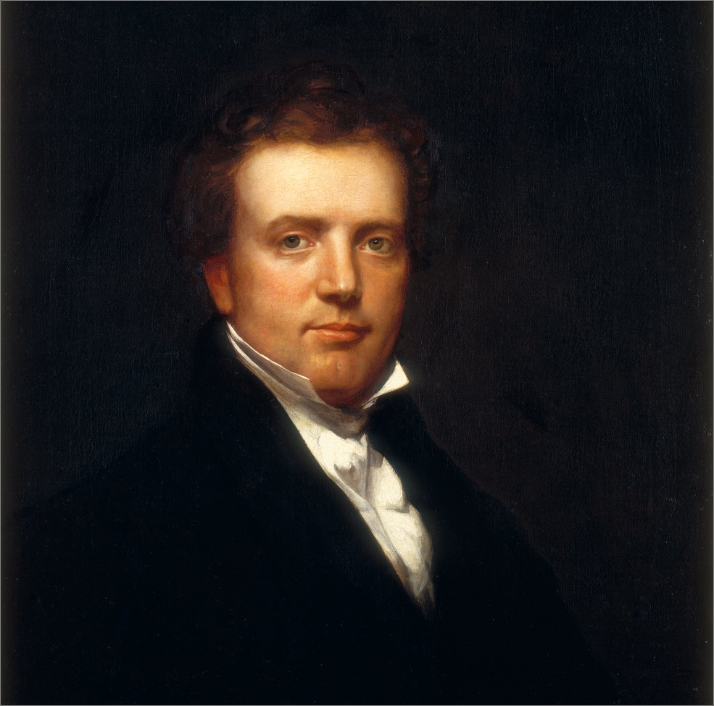
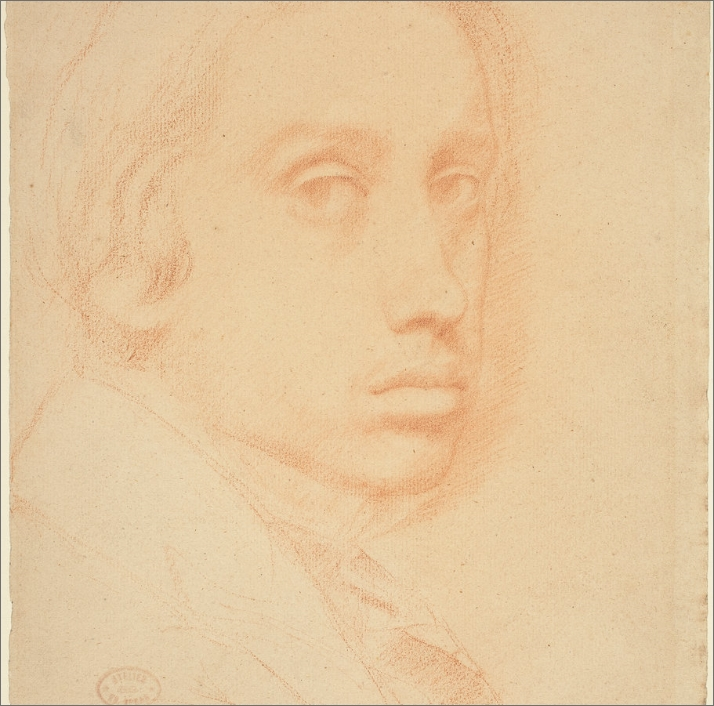

Explore our online gallery displaying classical studies and academic work. Click on any artwork to view a detailed high-resolution display.
Long Pose Charcoal Drawing
Dimensions: 18" x 24" | Medium: Charcoal & Chalk on Toned Paper
This drawing demonstrates academic figure study using compressed charcoal and white chalk highlights on grey toned archival paper. The exercise focuses on values, form definition, and edge control.
Our courses guide students to understand anatomical structures, shadow termination lines, and values. This long pose exercise helps develop patient observation skills.
Classical Cast Study
Dimensions: 16" x 20" | Medium: Graphite on Archival White Paper
A precise graphite study of a classical bust. This academic cast drawing is the foundation of our curriculum, teaching students to observe shapes, proportions, and light behavior on plaster.
Students learn to map structural envelopes and refine details using values from light grey to deep shadow without losing the sense of plaster texture.
Academic Portrait Painting
Dimensions: 14" x 18" | Medium: Oil on Canvas Panel
A classical portrait study in oils. This project explores skin tone temperature shifts, wet-on-wet paint edges, and glazing values to build complex, glowing colors.
The final levels of the academy guide students through the handling of oil painting mediums, color theory (hue, chroma, value), and canvas preparation.
Seated Figure Gesture Study
Dimensions: 12" x 16" | Medium: Carbon & Charcoal on Paper
An exploration of gesture, rhythm, and flow. This fast-pose figure drawing captures the weight distribution, postural tension, and anatomical landmarks of the model under deep spotlighting.
Students learn to capture the gesture line of the spine and shoulders in the initial minutes, then block in shadow values rapidly.

Still Life Value Study
Dimensions: 16" x 20" | Medium: Oil on Linen
An academic study in light reflection, texture comparison, and relative value relationships. This project teaches students to handle white plaster objects alongside highly reflective materials to organize complex lights and darks.
Special focus is placed on the transitions between matte plaster surfaces and crisp reflections on polished metals.

Anatomical Head Construction
Dimensions: 11" x 14" | Medium: Graphite on Drawing Paper
Understanding the structural planes of the skull and facial features. This exercise focuses on structural landmarks, proportions, and block-in accuracy using hard graphite leads.
Learning how the skull provides anchors for muscles helps students render portraits with sound structural integrity.